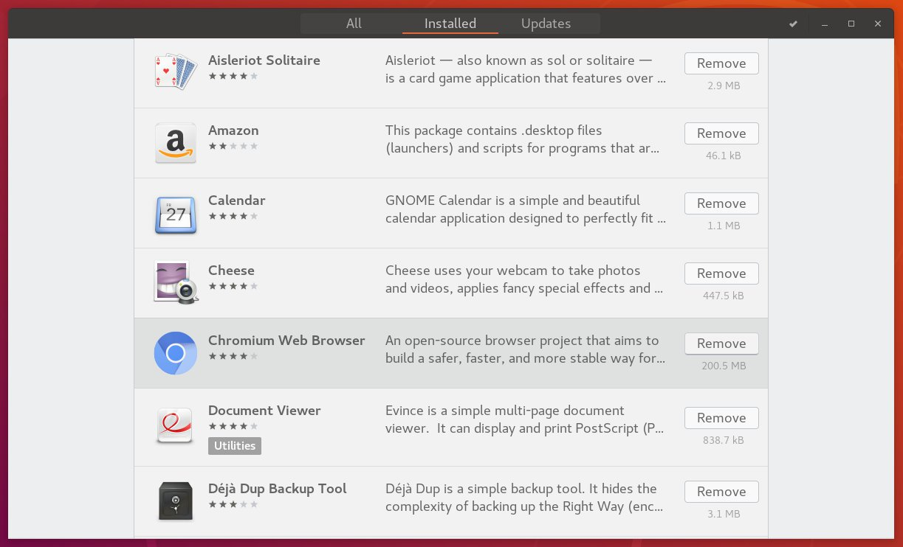

如何在Ubuntu上卸载软件包
有时你可能会在你的 Ubuntu 上安装一个应用程序，在尝试之后，你发现这个应用程序不适合你。在这种情况下，您可能希望卸载该软件包。
在本文中，我们将向您展示如何使用图形界面 “Ubuntu 软件中心”和在命令行使用 apt 或 apt-get 命令卸载软件包。
只有 root 或具有 sudo 权限的用户才能从 Ubuntu 卸载软件包。
使用 Ubuntu 软件中心卸载软件包
如果您不喜欢命令行，则可以通过 Ubuntu 软件中心 (USC) 卸载应用程序。该实用程序提供了一个用于查找，安装和卸载应用程序的图形界面。
-
在“活动”屏幕中，搜索 “Ubuntu 软件”并单击橙色 USC 图标。这将打开 USC 工具。
-
要获取所有已安装应用程序的列表，请单击顶部导航栏上的“已安装”选项卡。
-
向下滚动，直到找到要卸载的应用程序，然后单击旁边的“删除”按钮。

Ubuntu 软件工具仅显示已安装的具有图形用户界面 (GUI) 的应用程序。如果找不到要卸载的程序包，则应从命令行中删除该程序包。
使用命令行卸载程序包
GUI 工具执行的所有操作您都可以从命令行执行。实际上，命令行为您提供了卸载软件包的更多选项和控制。
您可以使用 Ctrl+Alt+T 键盘快捷键或单击终端图标打开终端。
在卸载软件包之前，必须先找到确切的软件包名称。获取系统类型上所有已安装软件包的列表：
sudo apt list --installed
该命令将打印一长串已安装的软件包。管道输出到 less 以使其更易于阅读可能是个好主意。或者您可以使用 grep 过滤结果。
在 Ubuntu ， Debian 和相关 Linux 发行版上，您可以使用 apt 和 apt-get 命令行实用程序安装，更新，卸载和管理软件包。两个命令的语法相同。
要删除已安装的软件包，请运行以下命令：
sudo apt remove package_name
替换 package_name 为要删除的包的名称。
sudo apt-get remove package_name
您还可以卸载多个包。包名称应以空格分隔：
sudo apt remove package1 package2
该 remove 命令卸载给定的包，但它可能会留下一些包文件。如果要删除包含其所有文件的包，请使用 purge 而不是 remove ：
sudo apt purge package_name
卸载 Snap 包
如果在运行 sudo apt list --installed 时未列出要卸载的应用程序，则可能是将其安装为快照程序包。
要列出所有已安装的快照包，请运行以下命令：
snap list
一旦知道确切的软件包名称，就可以输入以下命令将其卸载：
sudo snap remove package_name
卸载未使用的包
每当您安装依赖于其他软件包的新软件包时，也会安装软件包依赖项。卸载程序包时，依赖程序包将保留在系统上。这些剩余的包不再被其他任何东西使用，可以删除。
您可以使用以下命令删除不需要的包：
sudo apt autoremove
结论
我们已经向您展示了如何通过命令行和使用 Ubuntu 软件中心从 Ubuntu 中删除应用程序。了解如何删除软件包是 Linux 系统管理的重要组成部分。
您需要从 Ubuntu 中删除以前安装的软件包的原因有很多。例如，您可能需要卸载不再需要的应用程序或释放磁盘空间。